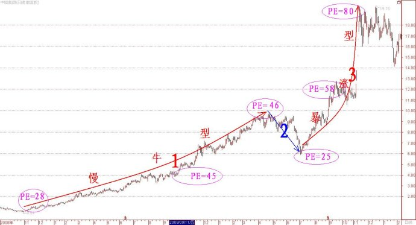
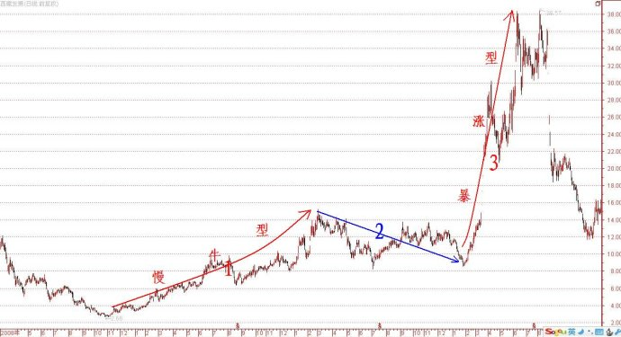

第271篇•教你炒股系列65:主升浪的形态（16）
谷为陵
2、前慢后快型两波主升浪形态
这类主升浪的特点是，第一波主升浪是一轮慢牛型，而第二波主升浪却是暴涨型。由于任何暴涨型主升浪都是有基本面或者市场面的原因的，绝不是能够随随便便地自然形成的，所以，可以据此推测出现第二波暴涨型主升浪时，相关股票一定是发生了什么重大的基本面变化，或者是拥有了什么重大题材，等等。
什么股票会出现这样的主升浪呢？我认为，应该有如下5类股票：
（1）成长股
当某些成长股业绩刚开始增长时，由于投资者还未能够认识其价值，其第一波主升浪可能是慢牛型，我在上篇博文中已经谈过这个问题。但是，当该类股票的业绩持续增长，甚至加速增长后，投资者对于这些股票的业绩增长能力就有了更高的预期，一旦这种预期转化为了汹涌的买盘，主升浪就会开始加速，上涨斜率变陡，从而形成了第二波暴涨型主升浪。第二波主升浪的加速，其根本原因是在投资价值提升的同时，投资者又因更高预期而给该类股票注入了新的投机价值，其最终结果就是将该类股票的市盈率提升到更高的水平，若该类股票的每股收益和市盈率双双得以提高，这就形成了著名的“戴维斯双击”效应。一旦“戴维斯双击”形成效应，因股价=每股收益*市盈率，股价上涨就会出现乘数效应——即，若每股收益提高一倍，假设市盈率保持不变，则股价本应该上涨一倍；但假若市盈率同时提高一倍，那么，股价就能够暴涨（2*2-1）=3倍。所以，这类牛股的第二波暴涨型主升浪，仅仅是因为每股收益提高，而市盈率保持不变的情况是很少见的，在绝大多数情况下，是“戴维斯双击”效应作用的结果。
将市盈率调高而使股价暴涨的案例很多，我仅举一个著名的超级牛股中恒集团的案例。自2008年10月底至2010年11月初，中恒集团股价从最低的0.54元（前复权，下同）上涨到最高19.76元，涨幅达到了约36倍。在这轮巨大的上涨行情里，其主升浪就是呈现了前慢后快型的两波主升浪形态。而其第二波暴涨型主升浪，就是将市盈率调高的结果。为了更加直观地看出股价上涨与市盈率调高关系，我在图中标示了根据当时季报和年报数据得出的动态市盈率,参看下图：

从上图中可以看出明显的两点：
一是中恒集团的第一波慢牛型主升浪虽然涨幅达到了13倍，但在股价的整个上涨过程中，该股的市盈率一直稳定在约45倍左右，这说明该股股价的在这个阶段的大涨，并非由于市盈率调高所致，而是由于每股收益的持续增长所致。这正好验证了我上面对于慢牛型成长股的分析，慢牛型成长股的股价上涨幅度与其每股收益的提高幅度几乎一致，其表观特征就是尽管股价不断上涨，但市盈率却基本上维持不变，典型的成长股的市盈率一般在30～50倍。欧奈尔在《笑傲股市》一书中，也统计了美国股市的几百只股价涨幅百倍以上的超级大牛股的市盈率定位情况，他发现这些大牛股在主升浪启动时的平均市盈率在40倍左右。看来，高成长股的市盈率不可能很低，30～50倍市盈率是它们的正常市盈率定位水平。
二是中恒集团的第二波暴涨型主升浪涨幅达到3倍，期间该股净利润虽然增长一倍，但因10送10后总股本也增加了一倍，致使该股在此阶段除权后的每股收益几乎没有变化。该股股价的这轮上涨与第一波主升浪正好相反，并非由于每股收益的持续增长所致，而是因人为调高市盈率所致。在此阶段，该股的市盈率从25倍上调到了约80倍，恰好增长3倍，与股价涨幅一致。
对于这类前慢后快型两波主升浪的成长股，其第一波慢牛型主升浪是较难操作的，但第二波暴涨型主升浪的操作相对容易一些。这是因为，有了该类股票第一波主升浪后，投资者就会发现并锁定这些牛股，一旦这些股票在经过调整后，股价再次启动，投资者就不会像第一波主升浪启动时那样对之视而不见了。只要能够“看见”，且知道股价上涨的原因，那么，操作就至少有一些根据了。股票操作怕就怕既看不见，也不知道一只股票到底是因何上涨的，那样就没法操作。
（2）题材股
很多股票低价股在长期下跌后，会跟随大盘反弹而走出第一波慢牛型主升浪，这波主升浪没有任何基本面的原因，纯粹是因为超跌反弹。由于股价在反弹后也不算高，还属于低价股范畴，若控股股东感觉股价跌不下去，就想趁股价低时整点事情，比如，搞个资产注入、收购热门资产等题材，反正是想来个先变相低价增持，其后再将股价搞上去的把戏。关于这些伎俩，我在前面的《产业资本坐庄的深度研究》系列文章里，已经进行过深入的探讨，在此不再赘述。很显然，假若产业资本能够跟随市场热点而制造热门题材，投市场所好，那么，该股股价肯定会因此而暴涨。
这样的案例也是很多的。比如，西藏发展前两年的大主升浪就是典型的前慢后快型两波主升浪形态，如下图所示：

西藏发展的第一波主升浪是随着大盘反弹而产生的，从股价走势和当时的市场背景分析，也不排除里面有个庄家在悄然运作。该股的第二波暴涨型主升浪，是因为出了一个参股一家稀土公司的公告，这在当时可算是超级大利好，于是，股价就出现了连续涨停板。非常可恶的是，在股价涨上去之后，该股却放弃了参股，最终使得该股出现连续跌停板。
对于这类前慢后快型两波主升浪的题材股，操作难度也是很大的。其第一波慢牛型主升浪是自然出现的，无迹可循，难以发现和抓住；其第二波暴涨型主升浪，又往往是连续涨停板，根本没有从容进货的就会。但总的来看，要参与这类题材股，还只能参与第二波主升浪，这就要求操作者下手要很快，一旦犹豫不觉，就很难抢到货，而待到股价来了几个涨停板后，就不敢再追了。
（未完待续）